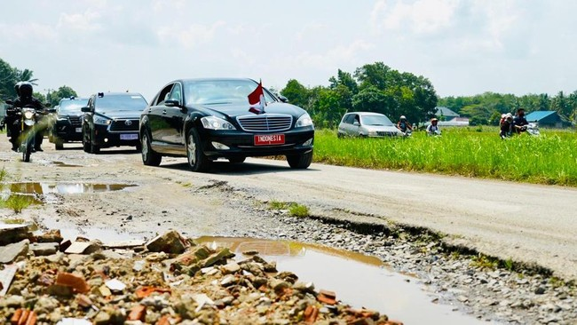

Kerusakan Jalan Di Lampung
Diketahui, Presiden Jokowi diagendakan melakukan kunjungan kerja ke Lampung dan ingin memastikan langsung apakah jalan di Lampung benar rusak seperti yang viral di beberapa media sosial. Awalnya, Presiden Jokowi diagendakan melakukan kunjungan kerja ke Lampung, pada (3/5/2023). Namun, batal dan diundur pada Jumat (5/5/2023).
Setelah melakukan peninjauan, ia meminta pemerintah setempat agar segera memperbaiki jalan yang rusak di provinsi Lampung.Presiden juga mengatakan bahwa, pemerintah setempat sedang mengumpulkan data terkait jalan yang rusak parah di kabupaten/kota maupun provinsi. Presiden mengakui bahwa anggaran di daerah masih sedikit yang dialokasikan untuk infrastruktur. Selain itu, Jokowi juga mengatakan bahwa, jika pemerintah Lampung tidak mampu mengerjakan proyek pengerjaan jalan, maka akan diambil alih oleh Kementrian PUPR.